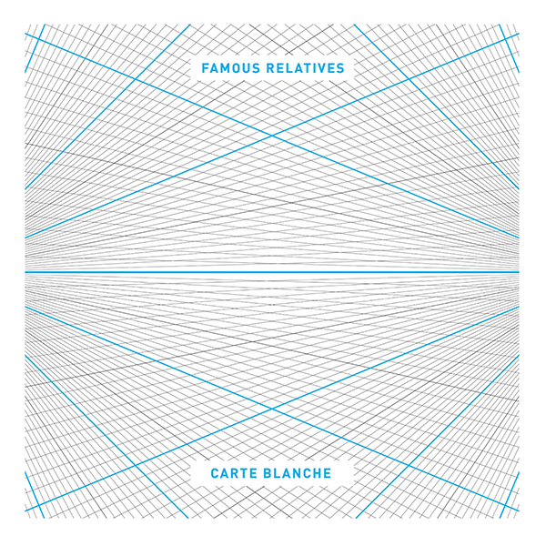
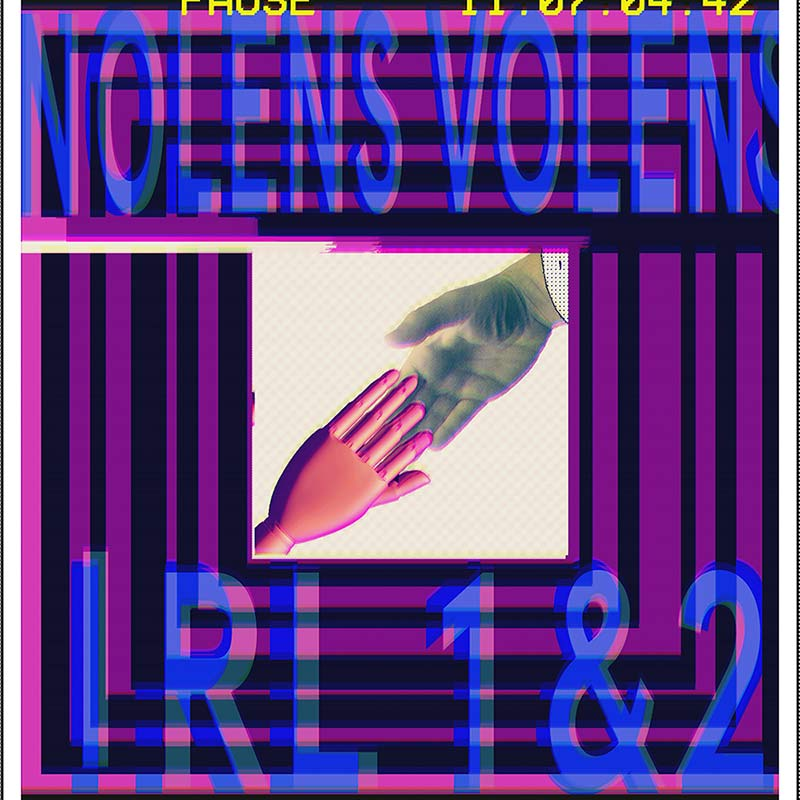
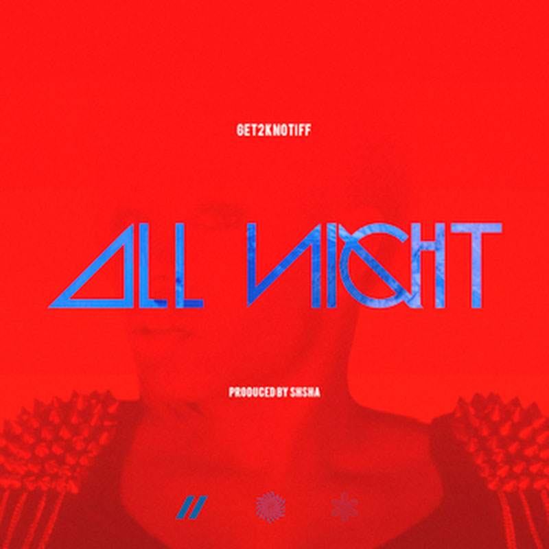
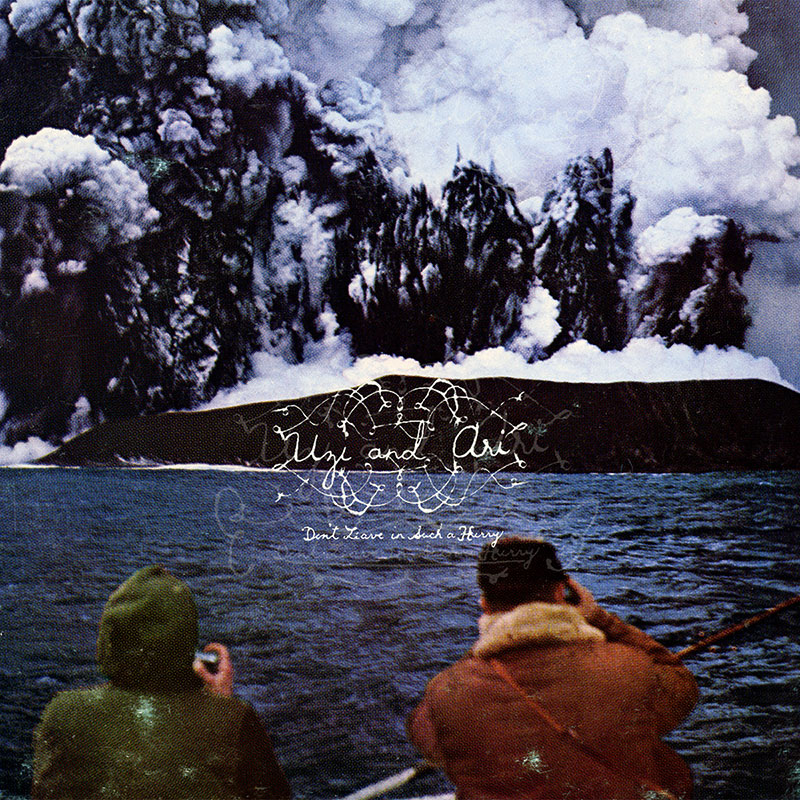
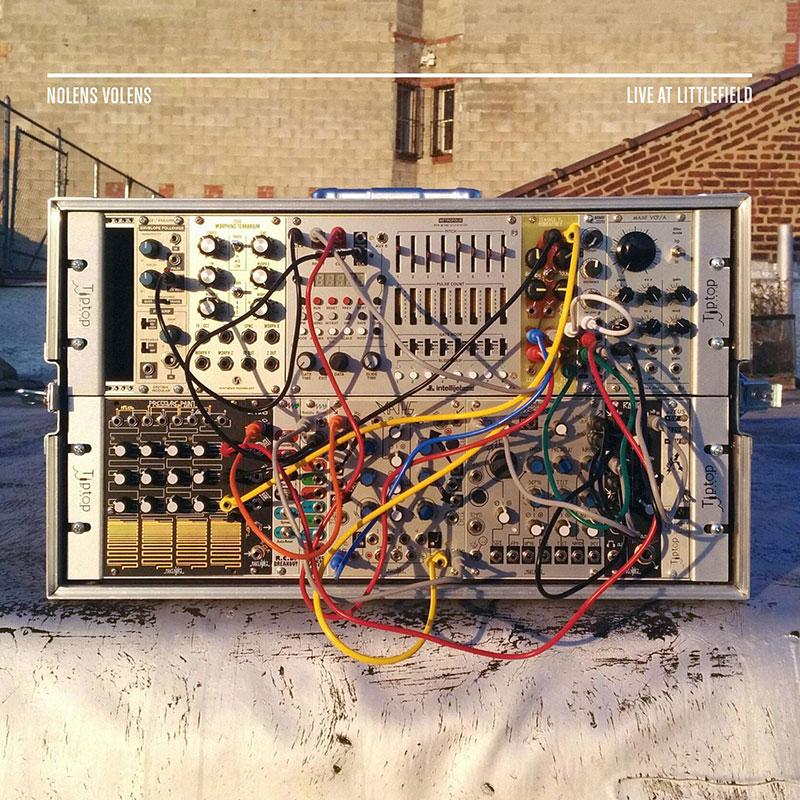
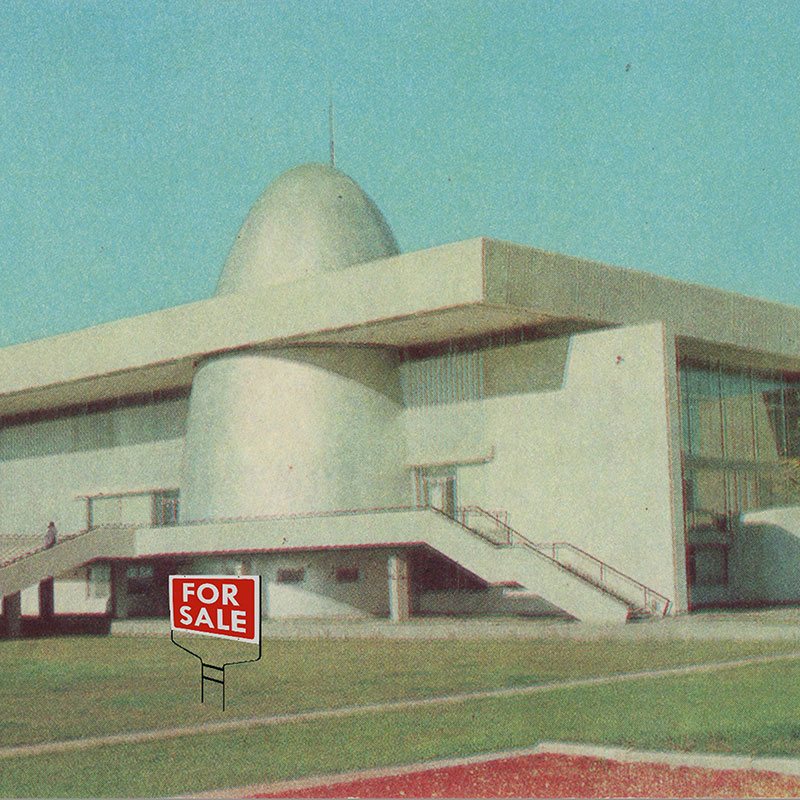
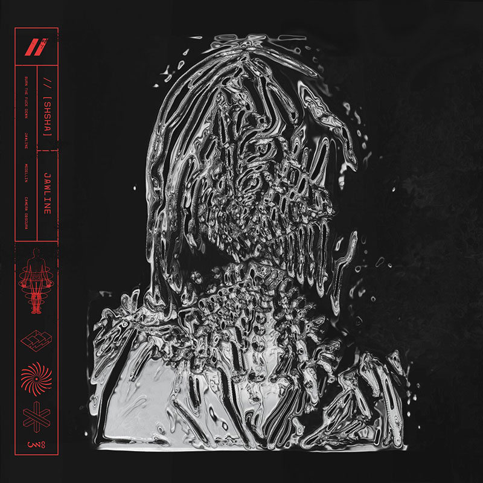
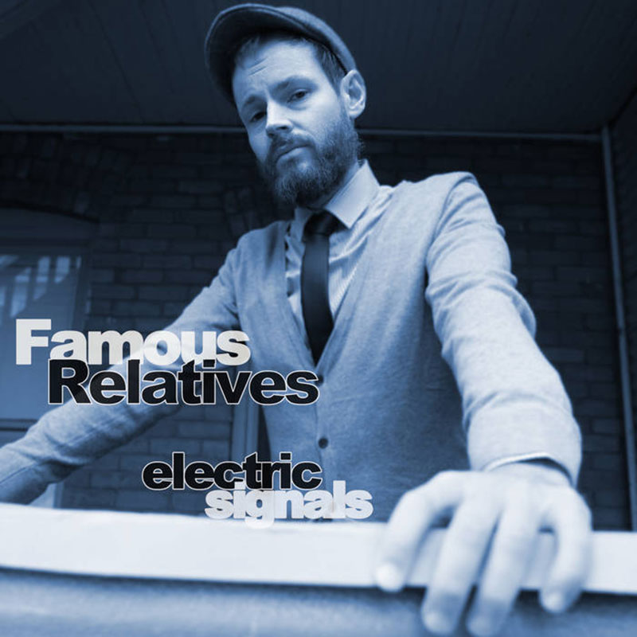
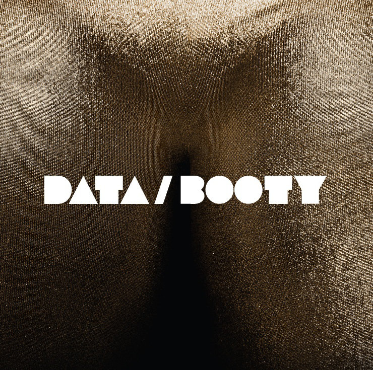

Nolens Volens - I R L 1 & 2

// (SHSHA) & Get2knoTiff - All Night
nonnon - Nowhere Mountain Soundtrack Vol.1

Uzi & Ari - Don't Leave in Such a Hurry
VCR5 - CHIPWIMP V

Nolens Volens - Live at Littlefield

Carl Cassette - Memory Sale

// (SHSHA) - Jawline

Handy - Namaste

Carl Cassette - Sovereign Valley

Famous Relatives - Electric Signals

Carl Cassette - City Habits

Handy - White Horse / Cuteness

Data/Booty
Tush Records distributes music and videos for many different labels and musicians. We are looking for great tunes to distribute. Give us a shout: andrew (at) tushrecords (dot) com.